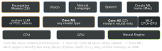

ai · folio
In one line: A trained model ships as a file; its first load specialises it for
this chip and OS and caches the result; it runs on CPU, GPU and Neural Engine.
Core ML (iOS 11) runs any model type, Core AI (iOS 27) modern neural nets;
Vision, Speech, Natural Language and Foundation Models put
Apple’s own models behind task APIs.
Download PDF Print view LaTeX source
Files
| file | what it is | OS |
|---|
.mlmodel | one file, neuralnetwork type (layers + weights inside) | 11 |
.mlpackage | folder: ML Program (typed ops) + separate weights; FP16 compute by
default (compute_precision=FLOAT32 to opt out); ct.convert’s default since coremltools 7 | 15 |
.mlmodelc | compiled — the thing that loads. compileModel(at:) writes to a
temporary dir: move it to Application Support to reuse | — |
.aimodel | Core AI asset from coreai-torch; still specialised on each device | 27 |
Load once — it is a compile
try await MLModel.load(contentsOf:configuration:): compile (fast) → instantiate → device specialisation (e.g. ANE compile) — seconds, minutes for big models; cached. The Core ML instrument labels each load prepare and cache or cached. So: load early, off the main thread, keep it loaded.optimizationHints: reshapeFrequency = .infrequent (17.4) lets a flexible-shape model stay on the ANE (enumerated shapes are fastest); specializationStrategy = .fastPrediction (18) buys latency with longer specialisation, more memory and disk.
Compute units
MLModel.availableComputeDevices (17) lists what exists; MLComputePlan (17.4) gives each op’s supported and preferred device and estimated relative cost — the Xcode Core ML performance report shows the same, with hints why an op can’t run on a unit. iOS 26 BGContinuedProcessingTask can ask for .gpu in the background (entitlement; check BGTaskScheduler.supportedResources).
Predict
- Sync
prediction(from:) is not thread-safe — serialise it. Batch: predictions(fromBatch:). Async overload (17): thread-safe, responds to cancellation, runs concurrently — cap in-flight calls: each holds its inputs and outputs, so peak memory grows.
- Stateful (18):
makeState() → MLState, then prediction(from:using:); buffers (an LLM’s KV cache) update in place, calls on one state must be serialised. WWDC24: Mistral 7B, 1.6× faster with state (M3 Max).
MLTensor (18): tensor maths on a compute device, dispatched asynchronously — materialise (shapedArray(of:)) before reading. Multifunction (18): several functions (e.g. adapters) share one set of base weights; pick with configuration.functionName.MLUpdateTask (13): fine-tune an updatable model on user data, on the device.- Encryption (14): Xcode makes a per-team
.mlmodelkey; --encrypt at compile; the first load fetches the key over the network, then it is stored — offline first launch fails with .modelKeyFetch.
Compress — coremltools.optimize
| technique | how | pays off on |
|---|
| palettize | k-means look-up table, {1,2,3,4,6,8} bits (iOS 16); per-grouped-channel + 8-bit LUT (18) | ANE: memory + latency; GPU: memory |
| linear quant. | int8 / int4 weights (per-block int4); W8A8 = int8 activations too | W8A8: ANE of A17 Pro / M4; int4: Mac GPU |
| prune | zero small weights, store sparse | latency on ANE, CPU |
| joint | sparse + palettized or quantized | further gains |
Three workflows: data-free (optimize.coreml, seconds to minutes; 6–8-bit palettes or 8-bit weights rarely cost much accuracy, lower bits drop fast) · calibration (∼128 samples, optimize.torch; e.g. 4-bit palettes) · fine-tuning (full training pipeline; best at ≤4 bits or ≥75 % sparsity). coremltools 8.0 (Sep 2024): stateful models, int4, 3-bit, blockwise; 9.0 (Nov 2025): iOS 26 targets, int8 model I/O.
The stack

Choose: an Apple task API if it already solves the task (real time, nothing to ship) → Foundation Models for open-ended language or image reasoning (Apple Intelligence devices only) → your own model in Core ML (any type, iOS 11+) or Core AI (iOS 27+) → a server when the model is too big or needs world knowledge.
Core AI (iOS 27, WWDC26)
- The inference engine behind Apple Intelligence, opened to apps, on every Apple-silicon platform including watchOS.
pip install coreai-torch: torch.export → TorchConverter() → save_asset("X.aimodel"); coreai.runtime runs it from Python to diff outputs against PyTorch.
- Swift:
AIModel(contentsOf:) → loadFunction(named:) → run(inputs:states:); states (a KV cache) are mutable views written in place; non-escapable types keep it memory-safe without copies.
- Specialisation = segment/plan/optimise (the slow part, can run AOT on your Mac) + per-unit executables tied to device and OS.
AIModelCache: look up, delete, set retention, share across an app group; AIModel.specialize(contentsOf:) warms it.
- Core AI instrument; Core AI Debugger traces a tensor to the Python line that made it; Core AI Models repo; a Core AI language model plugs into Foundation Models.
Vision
- Swift API (iOS 18): value-type requests,
try await req.perform(on:) → typed observations; ImageRequestHandler runs several on one image. VN* classes are the older Objective-C-era API.
- Text (26 languages), barcodes, faces, poses, subject masks, classification, feature prints, saliency, tracking.
CoreMLRequest = your model + Vision’s scaling (cropAndScaleAction) → classification, pixel-buffer or feature-value results.
- 26:
RecognizeDocumentsRequest (paragraphs, tables, lists, barcodes), DetectLensSmudgeRequest (A14 / M1+). 27: tap-to-segment GenerateIterativeSegmentationRequest (seed point, box or scribble; ≤13 points, 11 from a box; model fetched by downloadAssets()), Vision on watchOS, OCRTool + BarcodeReaderTool for a LanguageModelSession (not in Simulator).
- Coordinates are normalised 0–1 with a lower-left origin:
rect.toImageCoordinates(size, origin: .upperLeft) for UIKit.
var ocr = RecognizeTextRequest()
ocr.recognitionLevel = .accurate
let lines = try await ocr.perform(on: cgImage)
.compactMap { $0.topCandidates(1).first?.string }
let m = try await MLModel.load(contentsOf: url, configuration: cfg)
let box = try CoreMLModelContainer(model: m, featureProvider: nil)
let out = try await CoreMLRequest(model: box).perform(on: cgImage)
Speech · Natural Language · Create ML · Foundation Models
- Speech (26):
SpeechAnalyzer actor + modules SpeechTranscriber, DictationTranscriber, SpeechDetector; audio in and results out as AsyncSequences; AssetInventory installs the language model. Older: SFSpeechRecognizer.
- NL:
NLLanguageRecognizer, NLTokenizer, NLTagger, NLEmbedding; NLContextualEmbedding (17, BERT-style; requestAssets first).
- Create ML: image, object, hand-pose, action, style, text, word-tagger, sound, activity, tabular models, trained on Apple’s feature extractors → small files.
- Foundation Models (26):
SystemLanguageModel = the ∼3B on-device model (2 bits/weight, QAT); check availability (device, region, still downloading); the model changes with the OS (26.0–26.3, 26.4, 27.0). 27: image prompts, any provider via LanguageModel → llm-features-in-apps.
Related: llm-features-in-apps · Cloud vs
on-device · instruments-performance · App size & energy · App hardening & privacy ·
Background execution · AVFoundation · Metal